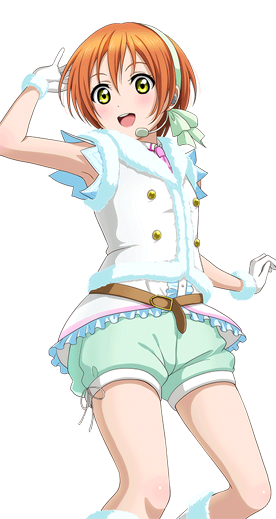
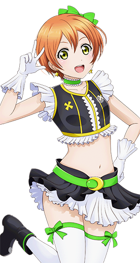
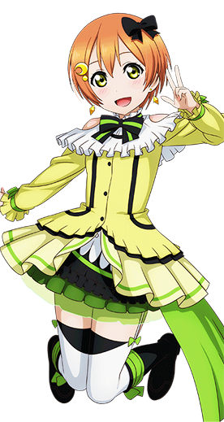

星空 凛
———Rin Hoshizora———
| 中文名 | 星空凛 | 就读学校 | 音乃木坂学院 |
| 外文名 | 星空 凛 （ほしぞら りん） |
年 级 | 高中一年级 |
| 别 称 | 凛、凛酱、凛喵 | 所属团体 | μ's、Lily White |
| 配 音 | 饭田里穂 | 擅长科目 | 体育、生物 |
| 生 日 | 11月1日（天蝎座） | 擅长料理 | 杯面 |
| 年 龄 | 15岁 | 儿时梦想 | 足球运动员 |
| 性 别 | 女 | 属 性 | 元气、猫娘 |
| 身 高 | 155cm | 萌点 | 短发、元气、 口癖“喵~” |
| 出生地 | 日本东京都千代田区 | 口癖 | “喵”（にゃ） |
| 三 围 | B75/W59/H80 | 应援色 | 黄色 |
- 
- 
- 
角色背景
星空凛，15岁，高中一年级。第一人称为“凛”（りん），是个障碍跑和足球都很擅长的运动型少女，身体柔 人物设定 人物设定(16张) 韧性却很差。做事比较迟钝也有点爱哭，不过是个元气十足的女孩，在体育会系中一向开朗活泼。有时句尾会加上“喵”（にゃ）。
与其闷闷不乐不如身体先行动起来的类型。出于“好像很有趣”的理由而什么都会参加。虽说只有在体育会系方面才很会照顾人，但同时一直以来也很照顾青梅竹马的小泉花阳。无论被说到什么反应都会很大，然后干脆利落地进行练习。
相貌衣着
面貌清爽的女孩子，橙发黄瞳。由于中性化的外貌经常被当成男孩子对待。
平时在校期间会身着音乃木板学院的校服。胸前系着代表一年级的蓝色花纹领结，蓝色西服，裙子则是蓝色格子百褶裙。在演出时会换上各式各样绚丽的演出服。动画前期由于自身性格的影响穿衣风格男性化，因此早期的演出凛也是唯一一个不穿裙子的成员。
性格特点
为人开朗活泼，神经大条，是与其闷闷不乐不如身体先行动起来的元气少女。无论何时都精神满满充满干劲，比较帅气，是μ's中性格最像男孩子的，即使被误认为男孩子也不会在意。但偶尔也会展现出其女孩子的一面，曾拜托南小鸟为其设计女性化的演出服装。做事比较冒失，跟高坂穗乃果并称为“笨蛋二人组”。
在小说中凛还表现出较强的顽皮捣蛋的性格，经常捉弄并惹哭花阳，但是在关键时候也很关心照顾自己的伙伴。
虽然性格活泼，但有时也会有畏缩的一面，特别是对自己的事情。行为迟钝冒失且爱哭。因为头发像男孩子一样很短，所以希望自己能变得有女人味，不喜欢被人说像男孩一样，虽嘴上说不在意，但其实很在意。小时候也常常被人嘲笑叫做男人婆，穿裙子还被男生嘲笑过，也因此留下了阴影。但后来在花阳等人的鼓励下找回了自信，花阳还对她说过：大家都在说也许你就是μ's中最有女人味的。还被大家夸奖过可爱呢。（详见TV版动画）
角色生活
平时喜欢运动，尤其是田径类的项目。喜欢的食物是拉面，其中最喜欢豚骨味的拉面，讨厌的食物则是鱼。
擅长投篮，并且鼻子也很灵敏，如同小狗一样。跟花阳是青梅竹马，关系特别要好。虽然经常捉弄花阳，但也有着想要保护花阳的信念。
运动型少女，在各类田径类比赛中总是斩获冠军，但本人对名次并不关心。在初中的最后一次比赛中由于前来加油的同学所带来的压力与第一失之交臂，凛一次因为没有拿到第一名而痛苦。不过后来凛也明白了自己比赛的意义所在，并以此为由在高中和花阳一同加入μ's。
非常喜欢猫，有句尾加“喵~”的口癖，在街头上遇见猫咪都会主动地打招呼。曾和花阳在冬天时救出了三只刚降生的小猫，后因为凛对猫咪过敏的体质而转托花阳的亲戚饲养。
声优的信
To 凛酱：
最开始就说“最~喜欢凛酱了”什么的果然会害羞呢……不过事实上这是真心话哦。
我也是会怕生的类型，一开始（和凛酱）互相之间的距离稍稍有些遥远也说不定……但是呢，渐渐地，随著和你一起度过同样的时间，我变得想要更多的了解和感受凛酱的事情。现在，我像是被凛酱附体了一般，录音的时候也是用着凛酱的心情在录，甚至哭出来……
能有这样的心情真的很棒对吧！
我一直从凛酱那里得到元气和笑容哦！不管我多么消沉的时候，只要看到凛酱的笑容，心情都会雨过天晴哦！凛酱难道是魔法使吗？（笑）这样的凛酱能给许多的人带来元气和笑容，我也好想成为这样的人。总有一天能够成为的吧~我这样想着，不过又觉得这种事应该没可能吧。
我以前呢有一个梦想，那就是在宽广的舞台上，穿着闪闪发光的衣服尽情地舞蹈让这个我曾认为绝对不可能实现的梦想成为现实的，就是凛酱哦。正是因为有凛酱，我才能在那个super arena尽情地舞蹈。
真的非常感谢。
我能够在这五年间，和凛酱一起成长，这真是太好了。
是凛酱（的声优）真是太好了。不是凛酱就不行！（笑）
因为平时不怎么写信，这篇文字看起来可能很混乱吧~
但是这份心情全是真真切切的！！
从今以后，也想和凛酱一起度过更多的时间，想做许多开心的事情所以，接下来也一直、一直请多指教啦>w<
P.S 绝对要一起去吃拉面喵~